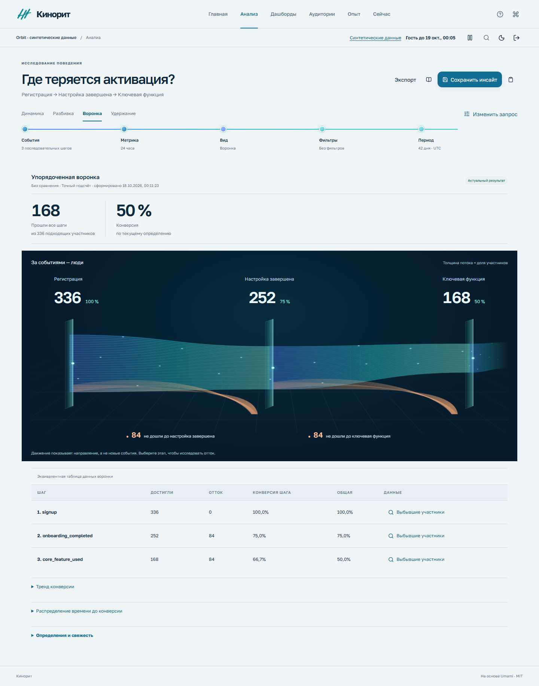
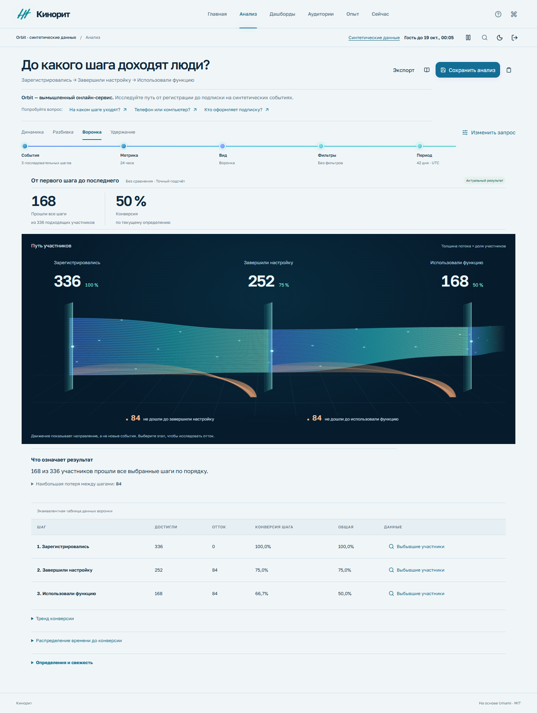

До / после · реальные снимки
Та же задача.
Понятнее путь к ответу.
Слева — рабочий интерфейс M21. Справа — M22: более ясные вопросы, объяснение результата и действия, которые помогают продолжить исследование.
Светлая тема · компьютер · синтетический набор
Анализ
Воронка видна, но связь между вопросом, цифрами и следующим действием требует больше самостоятельной расшифровки.

Открыть снимок M21 целиком ↗Анализ
Данные дополнены понятным объяснением прохождения и потерь. Участники, условия и период остаются частью воспроизводимого вопроса.

Открыть снимок M22 целиком ↗Сравнивайте смысл,
а не декорации.
- Понятен ли вопрос до чтения большого числа?
- Ясно ли, кто учтён в показателе и за какой период?
- Можно ли найти следующий шаг: изменить условия, открыть участников, сохранить или экспортировать?
- Объяснены ли пустые, ошибочные и неполные результаты?
Оба варианта — реальные снимки приложения на одном синтетическом наборе событий. Состояние сохранённой работы и конкретный запрос могут отличаться: это сравнение интерфейса, а не заявление о равенстве произвольных метрик или замер производительности. Исторические imagegen-макеты — материалы поиска направления; в сравнении выше они не используются.